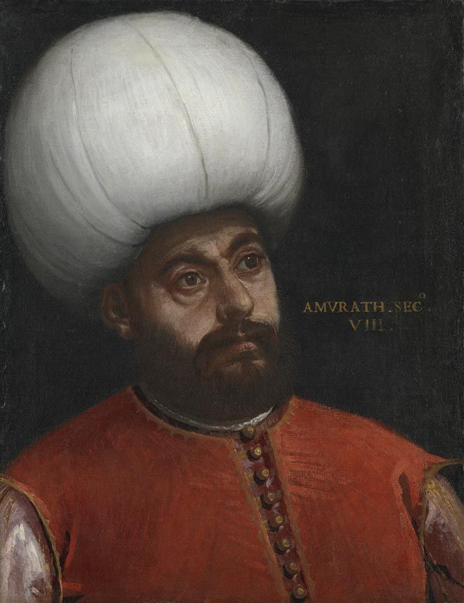

| önceki |  |
sonraki |
II. Murad veya tarihteki adıyla Koca Murad (Osmanlıca: مراد ثانی; d. Haziran 1404, Amasya – ö. 3 Şubat 1451, Edirne), Osmanlı İmparatorluğu'nun altıncı padişahıdır. Fatih Sultan Mehmed'in babasıdır. Osmanlı tarihinde tahtı kendi isteğiyle evladına terk eden ve iki defa padişahlık yapan ilk hükümdardır. Varna ve II. Kosova zaferleriyle Haçlı ordularını hezimete uğratarak Türklerin Balkanlar'daki hâkimiyetini ebediyen kesinleştiren büyük bir gazi, şair ve imar öncüsüdür.
Şehzadelik Yılları ve Meşakkatli Cülusu (1421)
Haziran 1404 tarihinde Amasya Sarayı'nda doğdu. Babası I. Mehmed Çelebi, annesi Dulkadiroğlu kızı Emine Hatun'dur. Çocukluğunu Amasya'da geçirdi; devrin büyük alimi Yörgüç Paşa'nın lalalığında mükemmel bir idari ve askeri terbiye aldı. 1421 yılında babasının Edirne'de vefat etmesi üzerine devlet ricali fitne çıkmasını önlemek için vefatı 41 gün gizledi; Amasya'dan Bursa'ya çağrılan 17 yaşındaki Şehzade Murad görkemli bir merasimle tahta çıktı.
Ancak Bizans İmparatoru II. Manuil, elinde rehin tuttuğu amcası Mustafa Çelebi'yi (Düzmece Mustafa) serbest bırakarak Rumeli'ye geçirdi. Mustafa Çelebi Edirne'de adına sikke kestirip hükümdarlığını ilan etti. II. Murad ordusuyla Bursa'dan hareket ederek Ulubat Köprüsü'nde amcasının ordusunu karşıladı; akılcı bir manevrayla amcasının askerlerini kendi tarafına çekerek isyanı bastırdı ve Edirne'de yakalatıp kale burcuna astırdı. Hemen ardından Karaman ve Bizans desteğiyle İznik'i ele geçirip isyan eden 13 yaşındaki küçük kardeşi Şehzade Mustafa isyanını da bastırdı.
Balkan Seferleri ve Edirne-Segedin Barışı (1444)
İç karışıklıkları bertaraf eden II. Murad, Bizans'ın entrikalarını cezalandırmak için İstanbul'u kuşattı; ardından Balkanlar'a yöneldi:
- 1430 yılında Venediklilerin elindeki stratejik Selanik Kalesi'ni fethetti.
- Sırp Despotluğu'nun başkenti Semendire ve Güvercinlik kaleleri alındı. 1440 yılında Belgrad kuşatıldıysa da alınamadı.
- Macar komutan Hunyadi Yanoş önderliğindeki Haçlı ordularının Balkanlar'da taarruza geçmesi üzerine, hem Doğu'da Karamanoğulları tehdidi hem de Batı'daki yıpranma sebebiyle 1444 yılında Macar Krallığı ile 10 yıl süreli meşhur Edirne-Segedin Antlaşması imzalandı.
Tahttan Feragati ve Manisa İnzivası
Çok sevdiği büyük oğlu Şehzade Alaeddin Ali'nin Amasya'da aniden vefat etmesi üzerine derin bir teessür ve melankoliye kapılan II. Murad, devlet idaresinden yorulduğunu beyan ederek Ağustos 1444'te Mihaliç'te yeniçeriler ve devlet ricali önünde tahtı henüz 12 yaşındaki oğlu II. Mehmed'e (Fatih) terk etti. Kendisi ise Manisa Sancağı'na çekilerek ilim, zikir, şiir ve ibadet dolu münzevi bir hayata başladı. Bu hadise Osmanlı tarihinde emsalsiz bir tahttan feragat örneğidir.
Varna Meydan Zaferi (10 Kasım 1444)
Tahta 12 yaşında bir çocuğun geçtiğini duyan Papalık ve Kardinal Cesarini, "Kâfirlere verilen yemin geçerli değildir" diyerek Edirne-Segedin Antlaşması'nı bozdu. Macar Kralı I. Ladislas ve Hunyadi Yanoş komutasındaki 100 bin kişilik devasa Haçlı ordusu Tuna'yı aşarak Varna'ya indi. Sadrazam Çandarlı Halil Paşa'nın ve genç padişah II. Mehmed'in tarihi mektubuyla ordu başına çağrılan II. Murad Manisa'dan gelerek ordunun başına geçti.
10 Kasım 1444'te Karadeniz kıyısındaki Varna Meydan Muharebesi'nde mızrağının ucuna çiğnenen Edirne-Segedin antlaşma metnini takarak savaşa girdi. Kral Ladislas'ın başının yeniçeri Koca Hızır tarafından kesilip bir mızrağa takılması üzerine Haçlı ordusu darmadağın oldu. Bu büyük zaferden sonra II. Murad tekrar Manisa'ya çekildi.
Buçuktepe İsyanı ve İkinci Saltanatı (1446 – 1451)
1446 yılında Edirne'de tarihin ilk yeniçeri isyanı olan Buçuktepe İsyanı patlak verdi. Devlet erkanının ricasıyla Edirne'ye gelen II. Murad, devlet idaresinde istikrarı korumak maksadıyla ikinci kez tahta oturdu; genç Şehzade Mehmed ise tecrübe kazanmak üzere Manisa Sancağı'na gönderildi.
II. Kosova Zaferi (17 – 20 Ekim 1448): Hunyadi Yanoş'un Varna hezimetinin intikamını almak amacıyla topladığı devasa Haçlı ordusuyla 1389 I. Kosova meydanında üç gün süren kanlı bir meydan savaşı yapıldı. Haçlılar tamamen imha edildi. Bu zafer ile Avrupalıların Türkleri Balkanlar'dan atma ümidi ebediyen sona erdi ve İstanbul'un fethine giden yol açıldı.
İmar Şaheserleri ve Kültür Mirası
II. Murad, Türkçe'ye ve Türk kültürüne son derece bağlı bir hükümdardı. Sarayında Türkçe eserler yazılmasını teşvik etti, Yazıcızâde Ali'ye Tevârih-i Âl-i Selçuk eserini yazdırdı. Edirne'de mimarlık tarihinin ilk anıtsal çok kubbeli şaheseri olan Üç Şerefeli Cami'yi ve Muradiye Camii'ni inşa ettirdi. Meriç Nehri üzerine 174 kemerli dünyanın en uzun taş köprüsü olan Uzunköprü'yü (Ergene Köprüsü) yaptırdı. Bursa'da cami, medrese ve türbelerden oluşan muazzam Muradiye Külliyesi'ni kurdu. "Murâdî" mahlasıyla tasavvufi gazeller yazdı.
Vefatı ve Vasiyeti
3 Şubat 1451 tarihinde Edirne Sarayı'nda geçirdiği bir inme sebebiyle 47 yaşında vefat etti. Vasiyeti gereğince cenazesi Bursa'ya getirilerek Muradiye Külliyesi'ndeki türbesine defnedildi. Vasiyetinde şunları emretmişti: "Beni doğrudan toprağa gömün; mezarımın üstünü örtmeyin, yağmur ve rahmet doğrudan kabrimin toprağına insin; yanıma başka kimse defnedilmesin." Bu sebeple türbesinin kubbesinin ortası günümüzde de açıktır.
Ailesi
- Eşleri:
- Hümâ Hâtûn (Fatih Sultan Mehmed'in annesi)
- Mara Hâtûn (Mara Brankoviç - Sırp Despotu Corc Brankoviç'in kızı, devlet diplomasisinde önemli rol oynamıştır)
- Tacünnisa Hatice Halime Hâtûn (İsfendiyaroğlu İbrahim Bey'in kızı)
- Yeni Hâtûn (Amasyalı Şadgeldi Paşa'nın kızı)
- Erkek çocukları:
- Şehzade Ahmed (1419 – 1437)
- Şehzade Alaeddin Ali (1425 – 1444, vefatı babasının tahttan feragatine yol açmıştır)
- II. Mehmed (Fatih Sultan Mehmed, 1432 – 1481)
- Şehzade İshak
- Şehzade Hasan (bebekken vefat etmiştir)
- Şehzade Küçük Ahmed (1450 – 1451)
- Kız çocukları:
- Şehzade Sultân (Sinan Bey ile evlendi)
- Fatma Sultân (Zağanos Paşa ile evlendi)
- Hatice Sultân (İsa Bey ile evlendi)
- İlaldı Sultân (Karamanoğlu İbrahim Bey ile evlendi)
II. Murad hakkında daha fazla bilgi için buraya tıklayın.